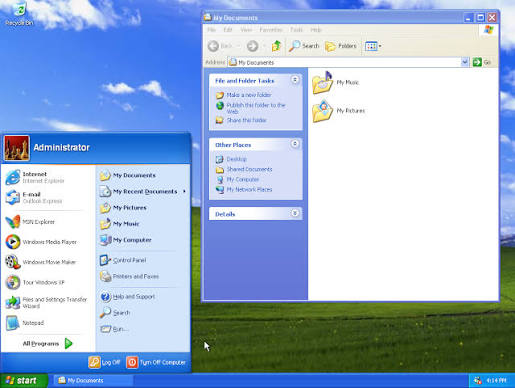
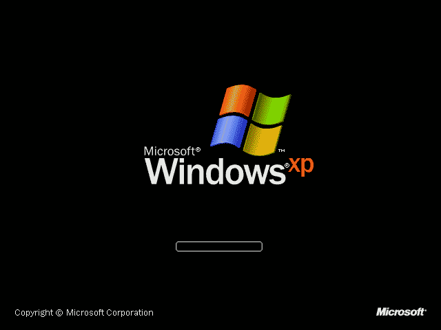

features.exe
Brand New Features
Explore the new features of Windows™ XP®
Windows™ Luna Design Language
Gone is the old and gray design of previous Windows™ versions. With Windows™ XP®, you'll experience Luna, the new design language of Windows. Luna brings a colorful and playful appearance to the Personal Computer, making it feel more friendly and approachable by anyone, regardless of age, nationality or gender.
windowsluna.jpg

Faster than ever!
Say goodbye to waiting. Windows® XP gets you up and running faster than ever before, combining the rock-solid reliability of the 32-bit Windows NT engine with unprecedented consumer performance. Whether you are booting up, launching demanding programs, or playing the latest 3D games, Windows® XP delivers a faster, more responsive experience across your entire PC.
boot.gif

Safe and Easy Personal Computing
Windows® XP makes using your PC friendly, simple, and stress-free. Whether you are a total beginner or a seasoned expert, the streamlined interface puts everything you need right at your fingertips.
- A Fresh, Streamlined Look: Experience the clean, bright design of the Luna interface. Essential controls are right where you expect them, reducing desktop clutter and keeping your workspace organized.
- Action-Oriented Task Panes: Folder windows now adapt to what you are doing. Select a file or folder, and Windows Explorer instantly displays relevant tasks on the left—such as renaming, copying, or emailing files—with a single click.
- Intelligent Search Companion: Finding lost documents, pictures, or songs is easier than ever. Meet Rover and your animated Search Companions, designed to guide you through quick and thorough file searches across your entire PC.
- Built-in Help & Support Center: Stuck on a task? The all-new Help and Support Center combines built-in troubleshooting wizards, online updates, and remote assistance into one easy-to-use launchpad.
dog.gif
clippy.gif